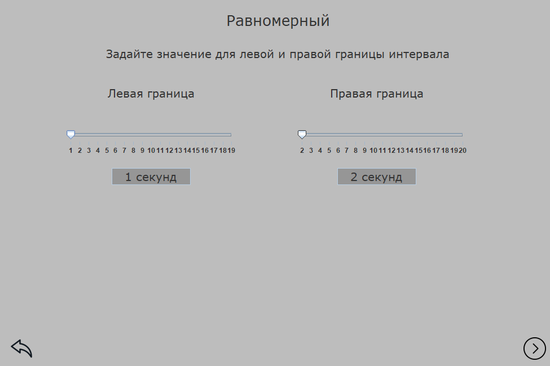

Самарский университет
────┈┈┈┄┄╌╌╌╌┄┄┈┈┈────
◉НАСТРОЙКА ГЕНЕРАЦИИ ТРАНСПОРТНОГО ПОТОКА◉
────┈┈┈┄┄╌╌╌╌┄┄┈┈┈────
────┈┈┈┄┄╌╌╌╌┄┄┈┈┈────
Система моделирования движения транспорта на автодороге используется для моделирования поведения реального траспортного потока на автодороге. Система включается в себя моделирование автотранспортного потока на двух типах дорог: туннельная автодорога и автострада. Система подразумевает использование различных способов генерации транспортного потока, внедрение ограничений на поток, визуальное отображение моделируемой ситуации в реальном времени.
────┈┈┈┄┄╌╌╌╌┄┄┈┈┈────
────┈┈┈┄┄╌╌╌╌┄┄┈┈┈────
После открытия программый открывается главное окно программы, где пользователь может выбрать тип автодороги , либо посмотреть сведения о разработчиках (рисунок 1).
Рисунок 1 - Главное окно программы
────┈┈┈┄┄╌╌╌╌┄┄┈┈┈────
────┈┈┈┄┄╌╌╌╌┄┄┈┈┈────
В случае выбора кнопки для просмотра сведений о разработчиках, откроется форма, где будет представлена соотвествующая информация (рисунок 2).
Рисунок 2 - Окно сведений о разработчиках
────┈┈┈┄┄╌╌╌╌┄┄┈┈┈────
────┈┈┈┄┄╌╌╌╌┄┄┈┈┈────
После выбора типа дороги, откроется экранная форма с выбором типа генерации транспортного потока: детерминированный или случайный(рисунок 3).
Рисунок 3 - Окно выбора типа генерации потока
Если был выбран детерминированный тип, откроется окно с настройкой частоты генерации транспортных средств в секундах
Рисунок 4 - Настройка параметров детерминированного типа
Если был выбран случайный тип, откроется окно, где будет предложено 3 типа закона распределения: нормальный, равномерный, показательный (рисунок 4).
Рисунок 5 - Выбор случайного типа
При выборе нормального закона распределения, откроется форма, где требуется указать математическое ожидание и дисперсию (рисунок 6).
Рисунок 6 - Настройка нормального закона распределения
При выборе равномерного закона распределения, откроется форма, где требуется указать левую и правую границу (рисунок 7).

Рисунок 7 - Настройка равномерного закона распределения
При выборе показательного закона распределения, откроется форма, где требуется указать интенсивность (рисунок 8).
Рисунок 8 - Настройка показательного закона распределения
После настройки параметров генерации транспортного потока потребуется аналогично настройкам генерации транспортного потока настроить параметры генерации значений скорости.
Затем, в случае если был выбран тип автодороги "Туннель", потребуется ввести значение длительности светофорных фаз (рисунок 9).
Рисунок 9 - Окно настройки длительности светофорных фаз
────┈┈┈┄┄╌╌╌╌┄┄┈┈┈────
────┈┈┈┄┄╌╌╌╌┄┄┈┈┈────
После всех настроек параметров для генерации транспортного потока и скорости, будет выведено окно с моделированием потока в туннеле (рисунок 10) или на автостраде (рисунок 11).
Рисунок 10 - Моделирование потока в туннеле
Рисунок 11 - Моделирование потока на автостраде
────┈┈┈┄┄╌╌╌╌┄┄┈┈┈────
ВЫХОД ИЗ ПРОГРАММЫ
────┈┈┈┄┄╌╌╌╌┄┄┈┈┈────
Выход из программы осуществляется нажатием на кнопку закрытия формы в правом верхнем углу (рисунок 12).
Рисунок 12 - Выход из программы
Система моделирования движения транспорта на автодороге 1.0
Copyright © Калинин А.А., Бакланов И.Д.
Система моделирования движения траспортного потока на автодороге не является свободно распространяемой программной системой.